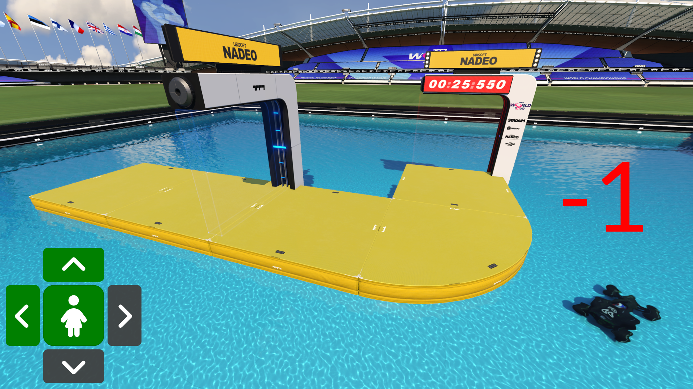
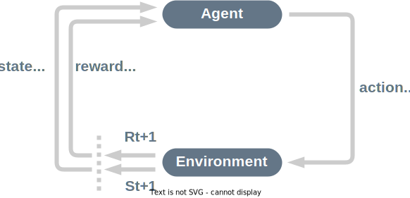

Introduction to Deep Reinforcement Learning (Trackmania AI POV)
Welcome to the wonderful land of Deep Reinforcement Learning, a hot topic in Artifical Intelligence.
Deep RL is a type of Machine Learning where an agent learns how to behave in an environment by performing actions and looking at the results.
In this blog post, we will explore the basics of deep reinforcement learning. We will focus on what PedroAI project uses. The project features an AI learning to play the popular racing game Trackmania. The entire process is streamed on Twitch allowing viewers to watch the AI improve over time.
We will be introducing some key concepts about deep reinforcement learning that are used by PedroAI. For a more in-depth introduction to deep reinforcement learning, I recommend checking out this blog post from Thomas Simonini and Omar Sanseviero. The current post is heavily inspired by their work.
This article is the first of a two-part series where we first learn about deep reinforcement learning basics before diving deeper into the specificities of the PedroAI project.
- Introduction to Deep Reinforcement Learning (Trackmania AI POV)
- How PedroAI works
A third article about the technical details of PedroAI is being written as you read this.
What is Reinforcement Learning?
To understand Reinforcement Learning, let’s start with the big picture.
The big picture
The idea behind Reinforcement Learning is that an agent will learn from the environment by interacting with it through trial and error and receiving rewards, negative or positive, as feedback for performing actions.
Imagine putting your little sister in front of a slightly modified version of Trackmania where crossing a checkpoint or the finish line gives you one point but falling in the water substracts one point. You put a controller in her hands and let her alone.
Your sister will interact with the environment, the Trackmania game, by pressing the forward trigger (action). She got a checkpoint, that’s a +1 reward. It’s positive, she just understood that in this game she must get checkpoints.
She continues to press forward but presses left too late to take the turn and falls in the water, that’s -1 reward.

By interacting with her environment, through trial and error, your little sister understood that, in this environment, she must take checkpoints and not fall.
Without any supervision, your sister will get better and better at playing the game.
That’s how humans and animals learn, through interaction. Reinforcement Learning is just a computational approach of learning from action.
A formal definition
If we take now a formal definition:
Reinforcement learning is a framework for solving control tasks, also called decision problems, by building agents that learn from the environment by interacting with it through trial and error and receiving rewards, positive or negative, as unique feedback.
But how does Reinforcement Learning work?
The Reinforcement Learning Framework
The RL Process
The RL Process is a loop of state, action, reward and next state:

To understand the RL process, let’s consider PedroAI learning to play Trackmania:

- The Agent receives state S0 from the Environment, the first frame of the game.
- Based on that state S0, the agent takes action A0, the car will go forward.
- The Environment goes to a new state S1, a new frame.
- The Environment gives some reward R1.
This RL loop outputs a sequence of state, action, reward and next state.
The agent’s goal is to maximize its cumulative reward, called return.
The reward hypothesis: the central idea of Reinforcement Learning
Reinforcement Learning is based on the reward hypothesis, which is that all goals can be described as the maximization of the return (cumulative reward). In Reinforcement Learning, to have the best behavior, we need to maximize the return.
Rewards and the discounting
The reward is fundamental in RL because it’s the only feedback the agent gets. It enables the agent to know if the action taken was good or not.
The cumulative reward at each time step t can be written as:
Wich is equivalent to:
Now imagine you want to calculate the expected return of a state. You want to know the cumulative reward you can expect to get given your current state.
You could sum all the reward you expect to get in the future until the end of the run. However, in practice, the rewards that come sooner are more likely to happen since they are more predictable than the long-term future reward. That is why we introduce a discount rate for future potential rewards.
Let’s say your agent is at the start of the following track. Your goal is to cross the maximum number of checkpoints before falling off the road.

It’s more probable to cross the checkpoints near your position than the ones close to the finish. The farther a checkpoint is from your position, the more likely it is to fall off before getting it.
Consequently, the reward given for crossing a checkpoint far away is discounted more. We are not sure we’ll be able to cross the far away checkpoint.
In practice, to discount the rewards, we proceed like this:
- We define a discount rate called gamma. It must be between 0 and 1. Most of the time between 0.99 and 0.90.
The larger the gamma, the smaller the discount. This means our agent cares more about the long-term reward.
On the other hand, the smaller the gamma, the bigger the discount. This means our agent cares more about the short term reward (the nearest checkpoints here).
- Then, each reward will be discounted by gamma to the exponent of the time step. As the time step increases, the car will have more opportunities to fall off, so the future reward is less and less likely to happen.
The discounted cumulative reward can be written as:
Or:

Exploration/Exploitation tradeoff
Before looking at how to solve Reinforcement Learning problems, we must cover a very important topic: the exploration/exploitation trade-off.
Exploration is exploring the environment by trying random actions in order to find more information about the environment.
Exploitation is exploiting known information to maximize the reward.
Remember, the goal of our RL agent is to maximize the expected cumulative reward. However, we can fall into a common trap.
Let’s take an example:

Here our RL agent is rewarded for reaching the finish line fast. The faster it cross the finish line, the more reward it gets.
Now consider that our RL agent learnt that going forward in a straight line is a good way to reach its destination if there is no obstacle in between. The agent will always take the road on the left and never try the road on the right even if the right road is actually faster (exploitation).
But if our agent does a little bit of exploration and try the road on the right, it will discover a faster route that yields a bigger reward (exploration).
This is what we call the exploration/exploitation trade-off. We need to balance how much we explore the environment and how much we exploit what we know about the environment.
Therefore, we must define a rule that helps to handle this trade-off. We’ll see in future post how PedroAI handles this trade-off.
How to solve Reinforcement Learning problems
In other words, how to build an RL agent that can select the actions that maximize its expected cumulative reward?
The Policy π: the agent’s brain
The Policy π is the brain of our agent. It’s the function that tells us what action to take given the state we are in. So, it defines the agent’s behavior at a given time.

This policy is the function we want to learn. Our goal is to find the optimal policy π, the policy that maximizes expected return when the agent acts according to it. We find this π through training.
There are two approaches to train our agent to find this optimal policy π*:
- Directly, by teaching the agent to learn which action to take given the state it is in: Policy-Based Methods. We will not discuss this method here, see https://huggingface.co/blog/deep-rl-intro#policy-based-methods for more information.
- Indirectly, teach the agent to learn which state is more valuable and then take the action that leads to the more valuable states: Value-Based Methods. This is the method PedroAI uses.
Value-based methods
In value-based methods, instead of training a policy function, we train a value function that maps a state to the expected value of being at that state.
The value of a state is the expected discounted return the agent can get if it starts in that state, and then act according to our policy.
“Act according to our policy” just means that our policy is “going to the state with the highest value”.
Here we see that our value function defined value for each possible state.

Thanks to our value function, at each step our policy will select the state with the biggest value defined by the value function: -8, then -7, then -6 (and so on) to attain the goal.
The “Deep” in Reinforcement Learning
⇒ What we’ve talked about so far is Reinforcement Learning. But where does the “Deep” come into play?
Deep Reinforcement Learning introduces deep neural networks to solve Reinforcement Learning problems — hence the name “deep”.
For instance, PedroAI uses Deep Q-Learning. It uses a Neural Network to approximate the expected value of a state for each action it could take.

If you want to learn about deep learning in general, not only reinforcement learning, you should definitely watch the fastai Practical Deep Learning for Coders (Free).
That was a lot of information, if we summarize:
Reinforcement Learning is a computational approach of learning from action. We build an agent that learns from the environment by interacting with it through trial and error and receiving rewards, negative or positive, as feedback.
The goal of any RL agent is to maximize its expected cumulative reward (also called expected return) because RL is based on the reward hypothesis, which is that all goals can be described as the maximization of the expected cumulative reward.
The RL process is a loop that outputs a sequence of state, action, reward and next state.
To calculate the expected cumulative reward (expected return), we discount the rewards: the rewards that come sooner (at the beginning of the game) are more probable to happen since they are more predictable than the long-term future reward.
To solve an RL problem, you want to find an optimal policy, the policy is the “brain” of your AI that will tell us what action to take given a state. The optimal one is the one who gives you the actions that maximize the expected return.
There are two ways to find your optimal policy:
- By training your policy directly: policy-based methods.
- By training a value function that tells us the expected return the agent will get at each state and use this function to define our policy: value-based methods.
Finally, we speak about Deep RL because we introduce deep neural networks to estimate the value of a state hence, the name “deep”.
I encourage you to read the next blog post in this series How PedroAI works.